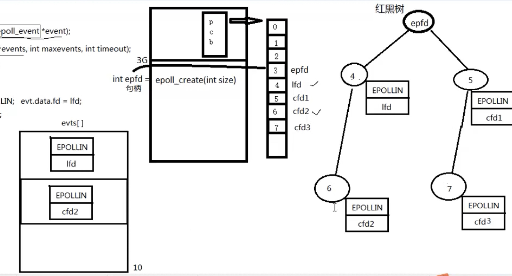
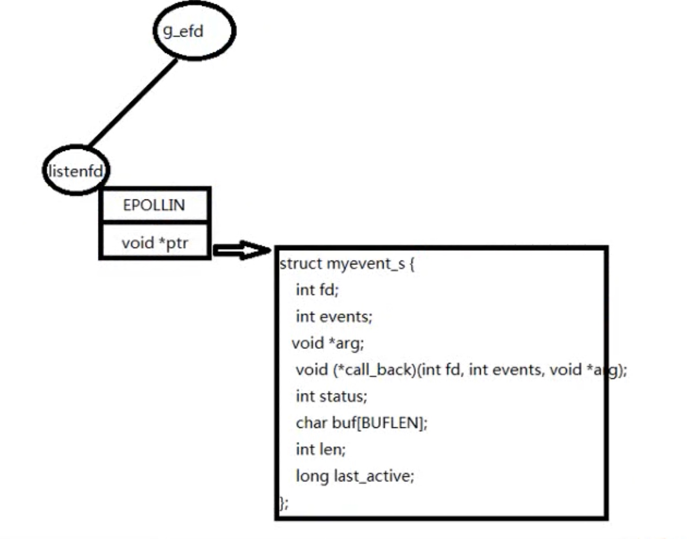

函数原型
- epoll_create(int size)
- size 是红黑树的树根
- epoll_ctl将描述符事件挂到红黑树上
int epoll_ctl(int epfd, int op, int fd, struct epoll_event //指针 *event);
int epoll_wait(int epfd, struct epoll_event *events,//数组传出参数
int maxevents, int timeout);
结构
- 
- epoll配置
- cat /proc/sys/fs/file-max
sudo vi /etc/security/limits.conf
在文件尾部写入以下配置,soft软限制，hard硬限制。如下图所示。
- soft nofile 65536
- hard nofile 100000
- epoll除了提供select/poll那种IO事件的电平触发（Level Triggered）外，还提供了边沿触发（Edge Triggered），这就使得用户空间程序有可能缓存IO状态，减少epoll_wait/epoll_pwait的调用，提高应用程序效率。
ET
- 边缘触发需要全部读出来，不然高并发情况下容易塞满缓冲区
- 数据太大容易耗时
- 可以先添加字节预判
- 不需要的话定时来清空一次
- readn
反应堆模型

- 滑动窗口
反应堆封装


- 


- goto语句


- last_active每次是event_set时改变的
心跳包